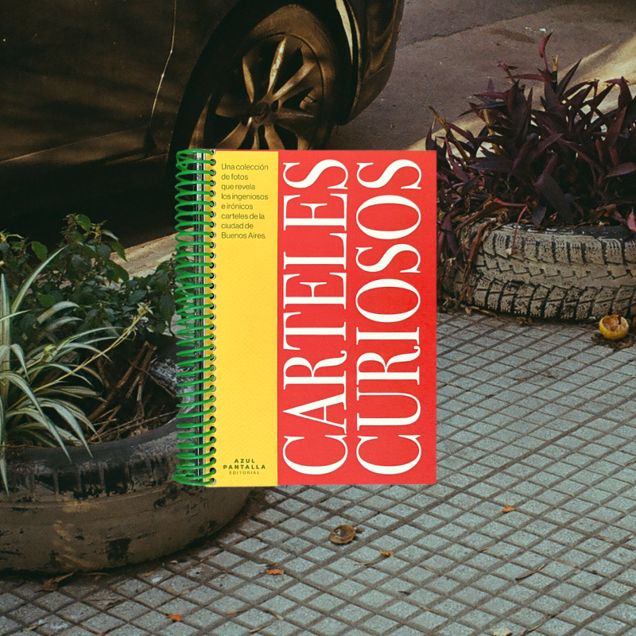
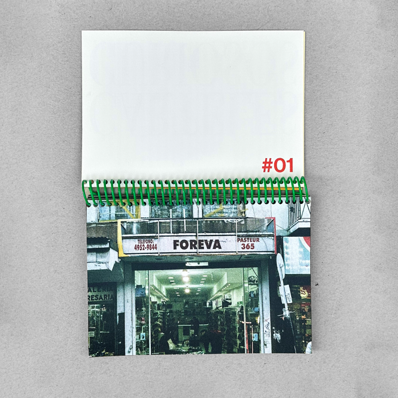
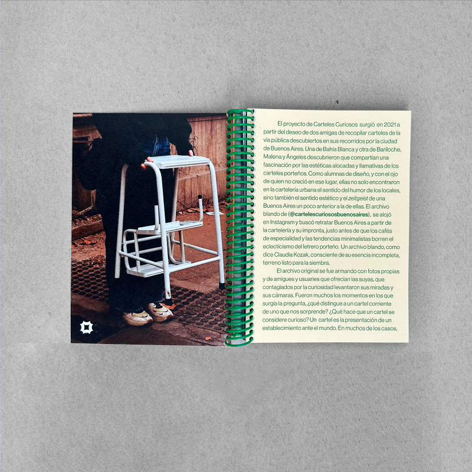
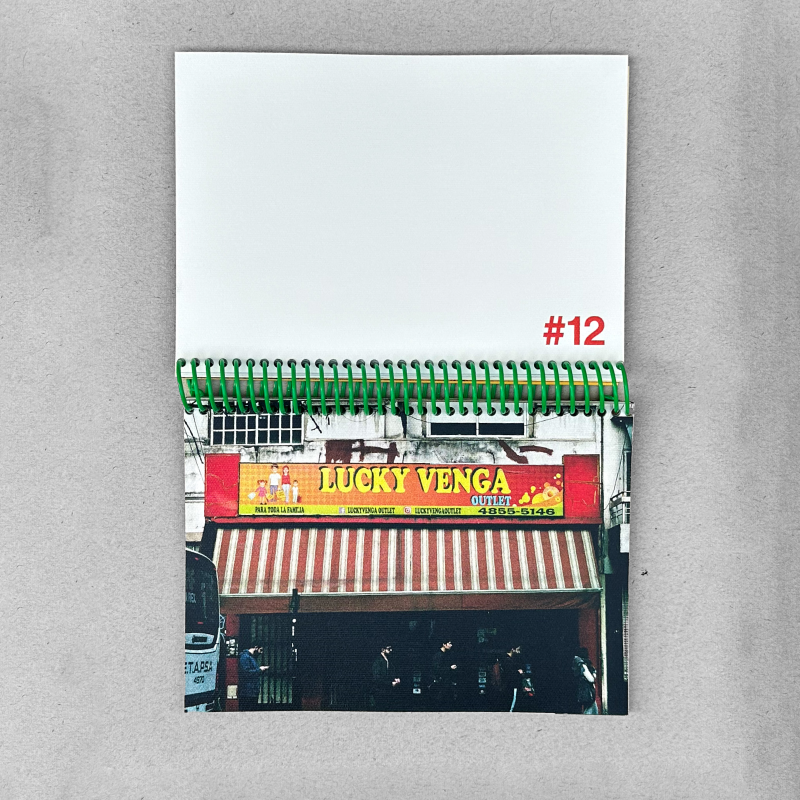
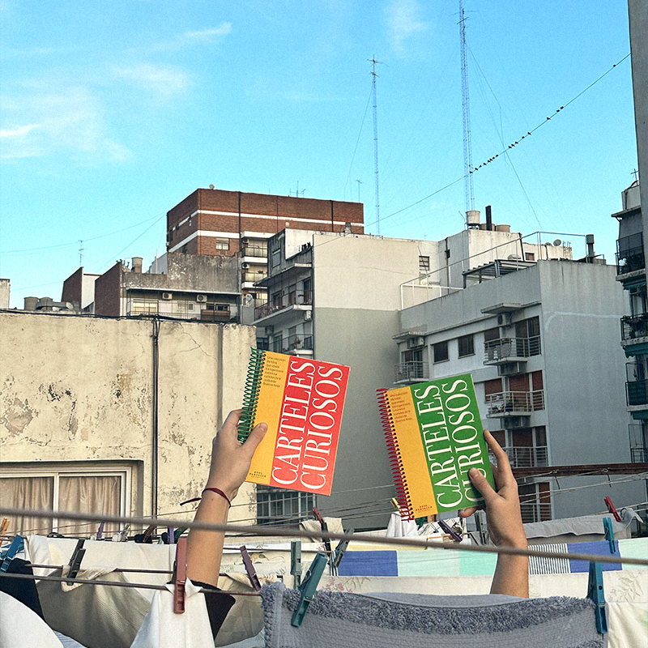
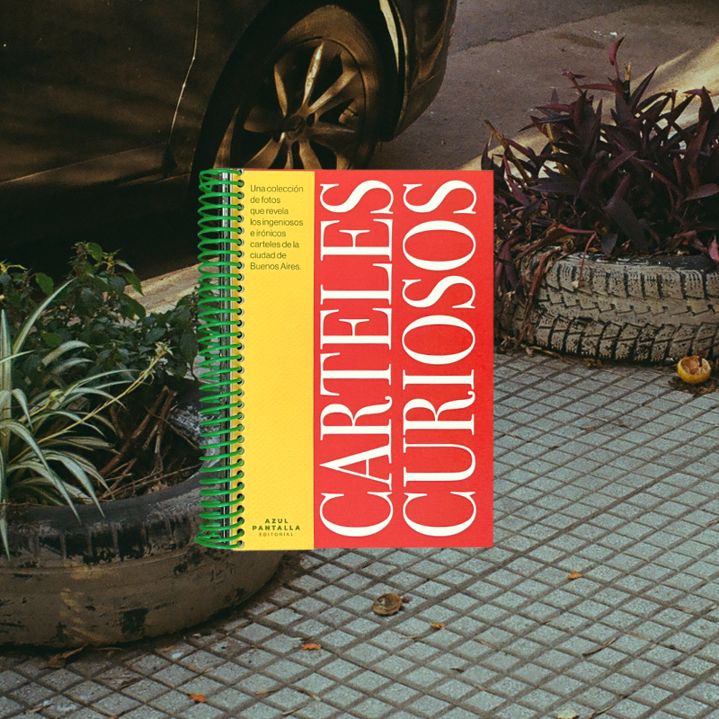
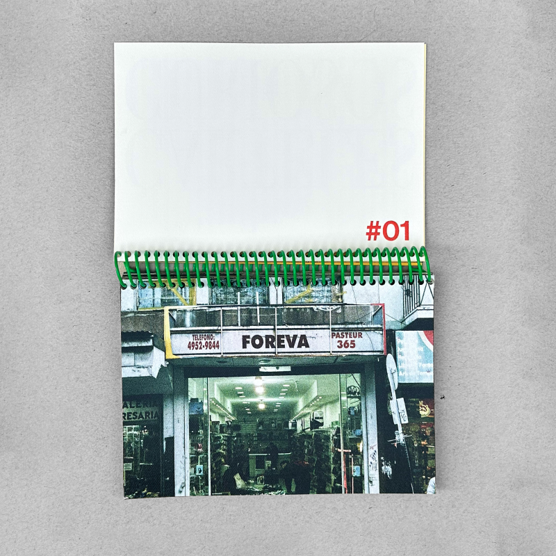
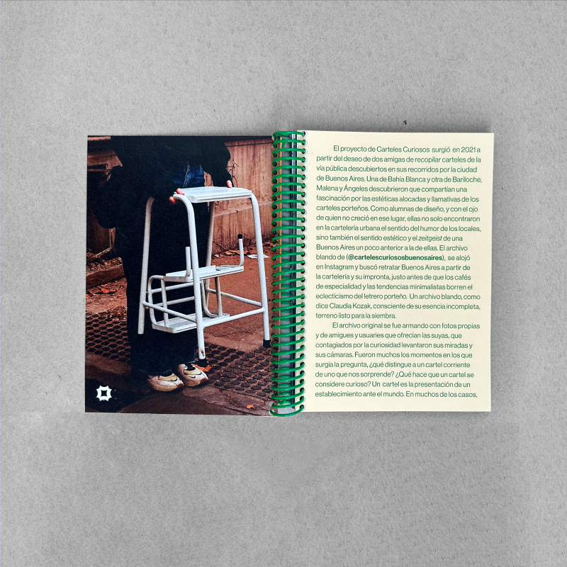
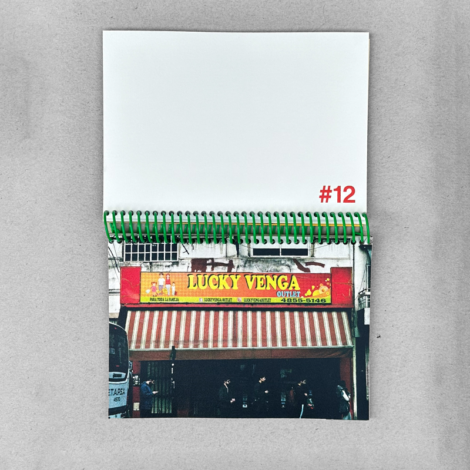
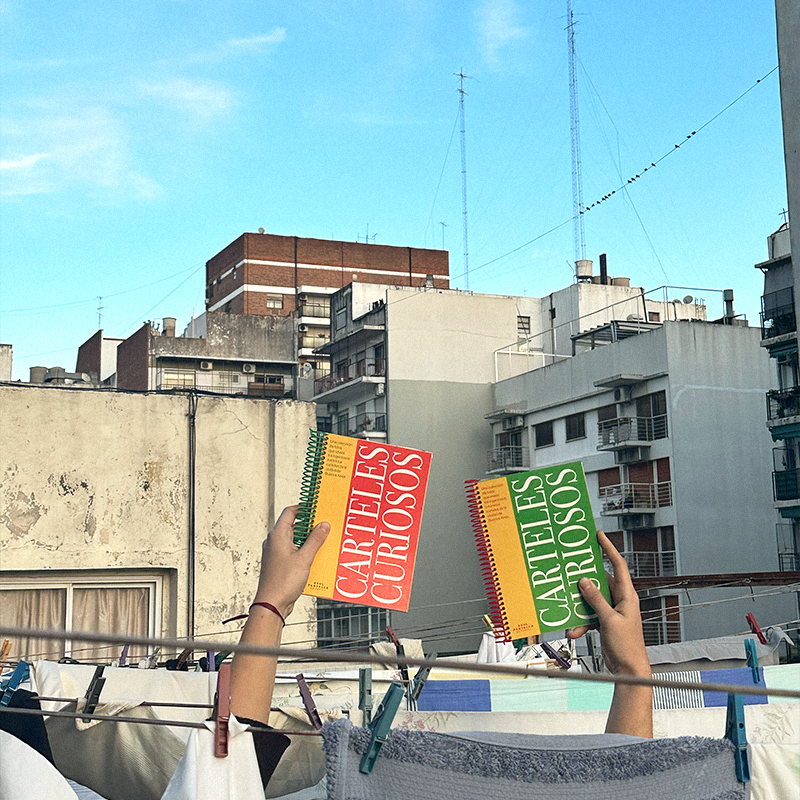

Es el primer libro bajo el nombre de la editorial Azul Pantalla. Se trata de un fotolibro anillado tamaño A6 con 25 fotos analógicas de carteles irónicos e ingeniosos tomados en las calles de la Ciudad de Buenos Aires.
Trabajo en conjunto con María Ángeles Fato.